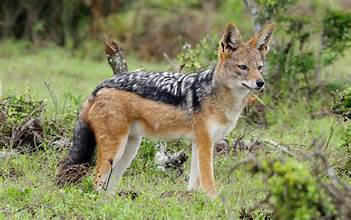

The black-backed jackal is a member of the dog family. It has a rusty red coat black patch on its back and a black-tipped tail. It measures around 95 centims inches) from head to tail. As opportunistic omnivores, jackals eat what they can. They work in family f hunt small antelopes, but they'll also feed on reptiles, insects, birds, fruits, be carcasses left by larger predators. There are two distinct populations of black-backed jackals in Africa one in in countries including Kenya, Ethiopia, and Tanzania, and one in southern Af countries including Namibia, Angola, and South Africa. These animals live in a wide variety of habitats, from deserts to grasslands to The IUCN lists black-backed jackals as least concern, meaning they face few However, they are hunted by farmers who kill them to protect their livestock.
